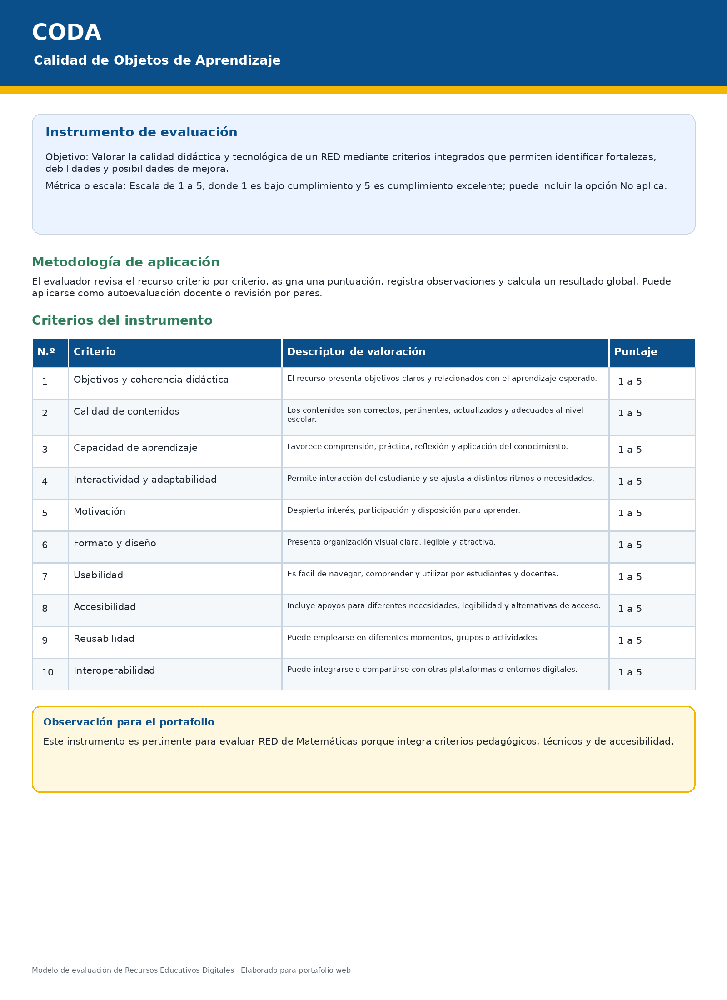
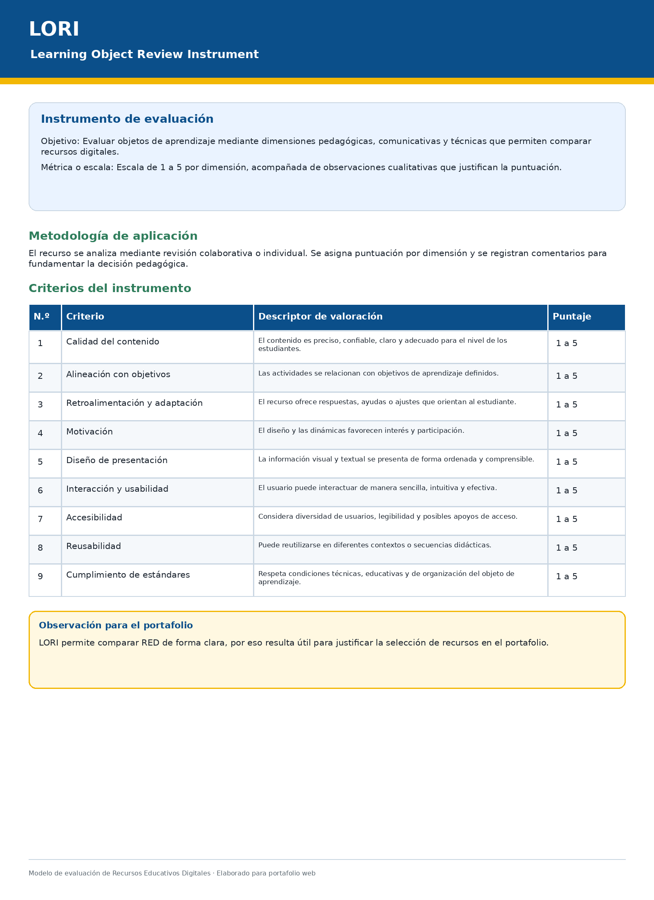
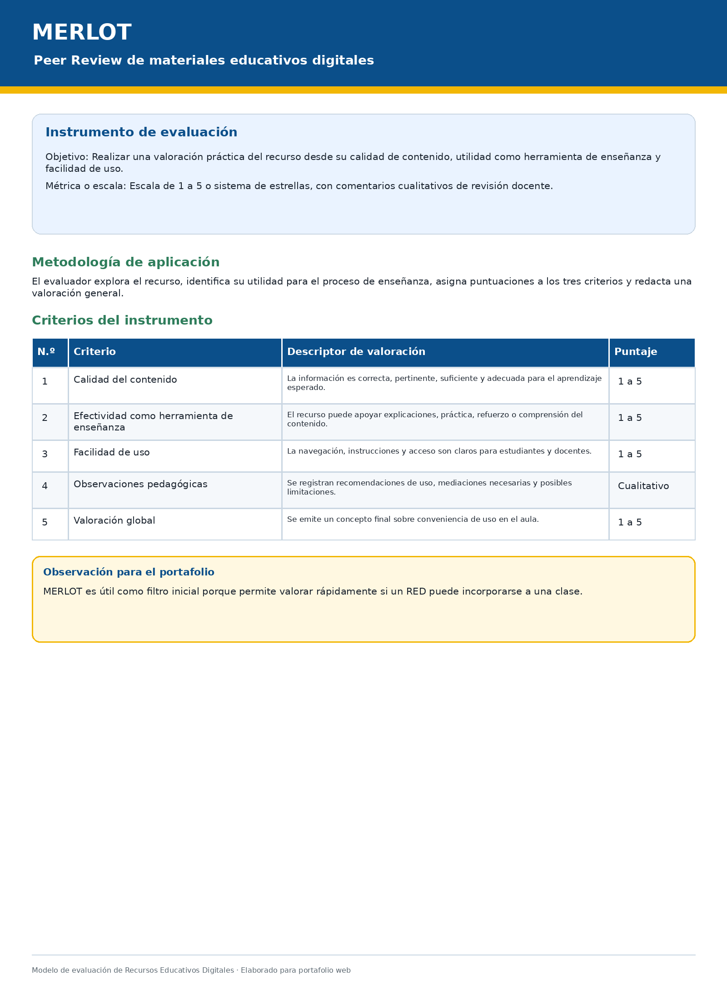
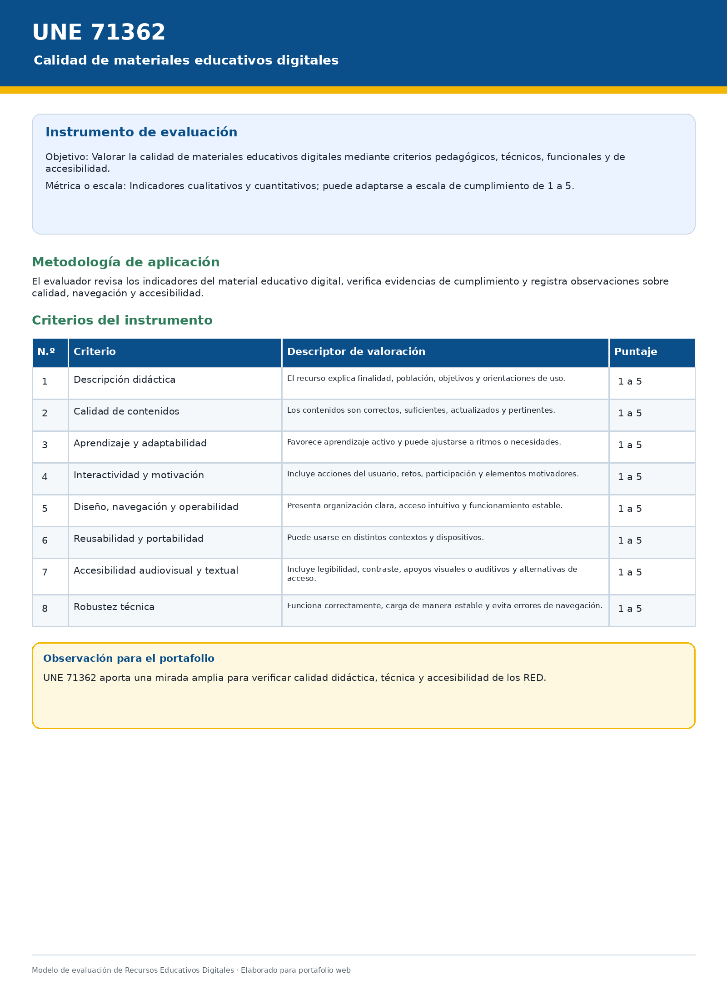
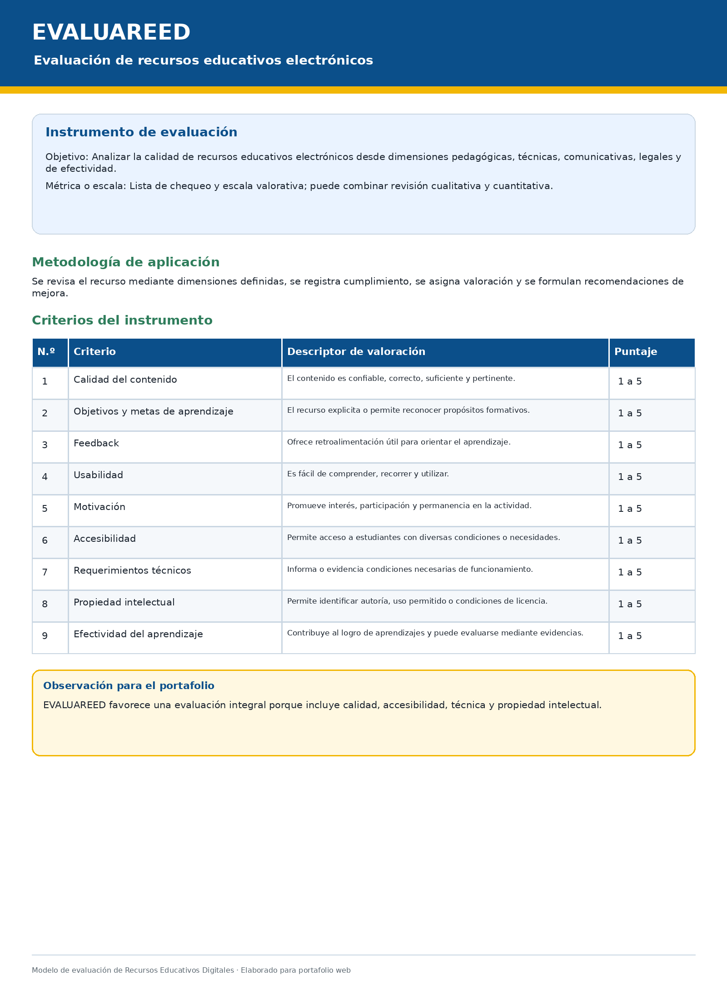
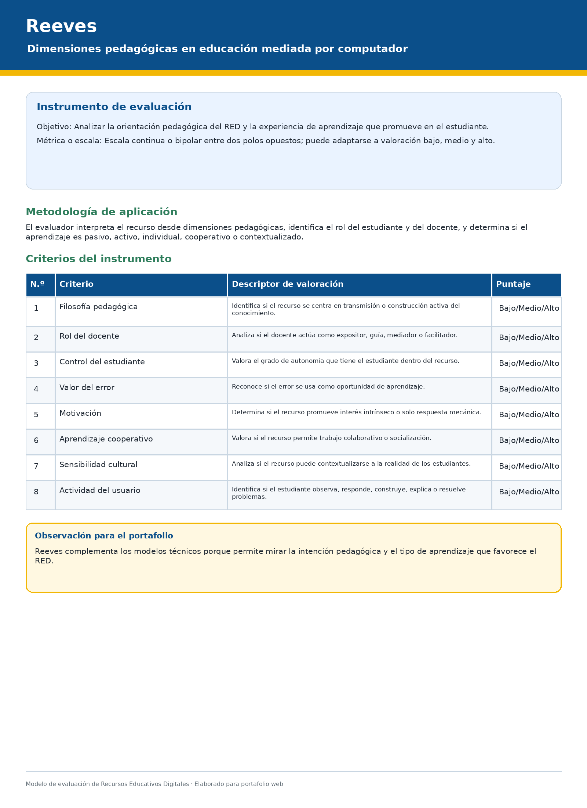
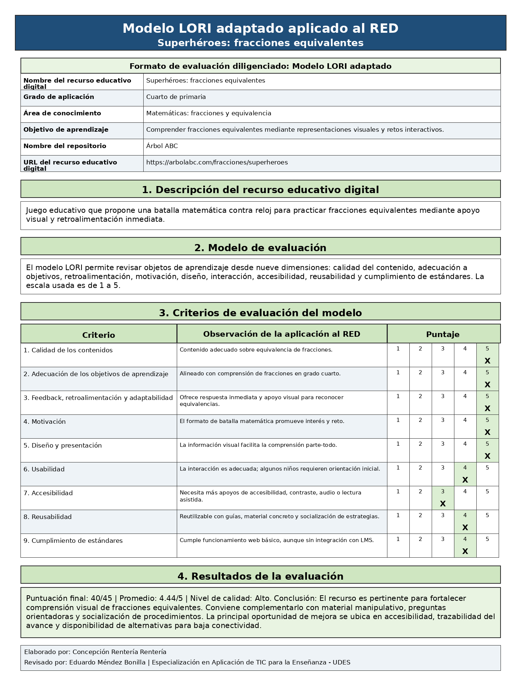
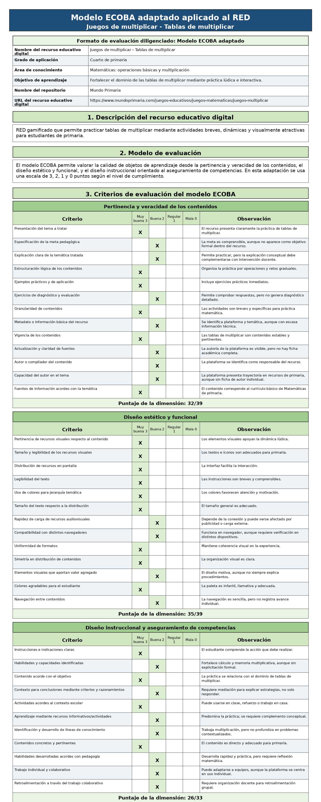
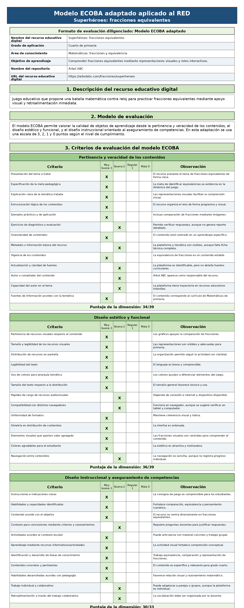

Universidad de Santander
VIGILADA MINEDUCACIÓN | SNIES 2632
MAGNA EDUCATIO AD MELIOR
Evaluación de Recursos Educativos Digitales
Portafolio digital - Matemáticas - Grado 4° de primaria
VIGILADA MINEDUCACIÓN | SNIES 2632
MAGNA EDUCATIO AD MELIOR
Portafolio digital - Matemáticas - Grado 4° de primaria
Estudiante: Concepción Renteria Renteria
Profesor Consultor: Eduardo Méndez Bonilla
Módulo: Evaluación de Recursos Educativos Digitales
Universidad de Santander (UDES)
Área de aplicación: Matemáticas | Grado: 4° de primaria
Este portafolio digital explora, analiza y aplica diferentes modelos de evaluación de calidad a Recursos Educativos Digitales (RED) para el área de Matemáticas en grado 4° de primaria. Se presentan seis modelos de evaluación, se seleccionan tres para su aplicación práctica, se evalúan dos recursos educativos digitales de matemáticas y se propone un modelo adaptado al contexto colombiano.
📖 Descripción: Herramienta desarrollada por la Universidad Complutense de Madrid que integra criterios pedagógicos y tecnológicos para valorar la calidad de objetos de aprendizaje.
📋 Criterios de evaluación: Objetivos y coherencia didáctica, calidad de los contenidos, capacidad de generar reflexión, interactividad y adaptabilidad, motivación, formato y diseño, usabilidad, accesibilidad, reusabilidad e interoperabilidad.
📊 Métrica o escala de valoración: Escala de 1 a 5, donde 1 corresponde al nivel más bajo y 5 al nivel más alto; permite además la opción "No aplica".
🔍 Metodología: Evaluación por pares o autoevaluación, mediante revisión sistemática del recurso con base en criterios previamente definidos.
📄 Instrumento de evaluación: Rúbrica o formulario estructurado compuesto por diez criterios de valoración, cada uno con escala de 1 a 5 y espacio para observaciones cualitativas sobre fortalezas, debilidades y posibilidades de mejora del recurso.

🔍 Haz clic para ampliar
📌 Observación para el portafolio: Este instrumento es pertinente para evaluar RED de Matemáticas porque integra criterios pedagógicos, técnicos y de accesibilidad.
📖 Descripción: Instrumento internacional diseñado para la evaluación colaborativa de objetos de aprendizaje, ampliamente usado para revisar la calidad pedagógica y técnica de recursos digitales.
📋 Criterios de evaluación: Calidad del contenido, alineación con los objetivos de aprendizaje, retroalimentación y adaptabilidad, motivación, diseño de presentación, interacción y usabilidad, accesibilidad, reusabilidad y cumplimiento de estándares.
📊 Métrica o escala de valoración: Escala de 1 a 5 para cada criterio, con posibilidad de complementar la puntuación mediante comentarios cualitativos.
🔍 Metodología: Revisión colaborativa por pares, en la que uno o varios evaluadores analizan el recurso con base en las dimensiones del modelo.
📄 Instrumento de evaluación: Matriz de evaluación conformada por nueve dimensiones, cada una valorada en escala de 1 a 5, acompañada de observaciones que justifican la calificación otorgada y orientan la toma de decisiones sobre el uso del RED.

🔍 Haz clic para ampliar
📌 Observación para el portafolio: LORI permite comparar RED de forma clara, por eso resulta útil para justificar la selección de recursos en el portafolio.
📖 Descripción: Modelo práctico de revisión por pares desarrollado por California State University para valorar materiales educativos digitales desde su utilidad docente.
📋 Criterios de evaluación: Calidad del contenido, efectividad potencial como herramienta de enseñanza y aprendizaje, y facilidad de uso.
📊 Métrica o escala de valoración: Escala de 1 a 5 o sistema de estrellas, complementado con apreciaciones cualitativas del evaluador.
🔍 Metodología: Evaluación realizada por docentes o usuarios expertos, quienes revisan el recurso de forma integral y emiten una valoración basada en su experiencia de uso.
📄 Instrumento de evaluación: Ficha de revisión por pares con tres criterios centrales, en la que se asigna un puntaje a cada aspecto y se agregan comentarios sobre pertinencia, utilidad pedagógica, claridad del contenido y facilidad de navegación.

🔍 Haz clic para ampliar
📌 Observación para el portafolio: MERLOT es útil como filtro inicial porque permite valorar rápidamente si un RED puede incorporarse a una clase.
📖 Descripción: Estándar español de calidad para materiales educativos digitales, elaborado para orientar su evaluación desde dimensiones pedagógicas, técnicas y de accesibilidad.
📋 Criterios de evaluación: Descripción didáctica, calidad de contenidos, capacidad para generar aprendizaje, adaptabilidad, interactividad, motivación, formato y diseño, reusabilidad, portabilidad, robustez, navegación, operabilidad, accesibilidad audiovisual y accesibilidad textual, entre otros.
📊 Métrica o escala de valoración: Indicadores cualitativos y cuantitativos, que pueden adaptarse a escalas valorativas o listas de cotejo.
🔍 Metodología: Aplicación de criterios normalizados para analizar de manera detallada la calidad del material educativo digital y verificar el grado de cumplimiento de cada dimensión.
📄 Instrumento de evaluación: Rúbrica o matriz de verificación basada en indicadores de calidad, organizada por criterios y subcriterios, que permite valorar el nivel de cumplimiento del recurso y registrar observaciones sobre aspectos técnicos, didácticos y de accesibilidad.

🔍 Haz clic para ampliar
📌 Observación para el portafolio: UNE 71362 aporta una mirada amplia para verificar calidad didáctica, técnica y accesibilidad de los RED.
📖 Descripción: Herramienta española que combina juicio experto y análisis automatizado para evaluar recursos educativos electrónicos desde una perspectiva integral.
📋 Criterios de evaluación: Calidad del contenido, objetivos y metas de aprendizaje, retroalimentación, usabilidad, motivación, accesibilidad, requerimientos técnicos, propiedad intelectual y efectividad del aprendizaje.
📊 Métrica o escala de valoración: Checklist y escala valorativa, con apoyo de revisión cualitativa y técnica.
🔍 Metodología: Evaluación mixta que combina análisis manual del evaluador con revisión de componentes técnicos del recurso.
📄 Instrumento de evaluación: Lista de chequeo estructurada por dimensiones, en la que se valora cada criterio mediante escala cualitativa o cuantitativa, acompañada de una revisión técnica y observaciones finales sobre la calidad global del recurso.

🔍 Haz clic para ampliar
📌 Observación para el portafolio: EVALUAREED favorece una evaluación integral porque incluye calidad, accesibilidad, técnica y propiedad intelectual.
📖 Descripción: Modelo centrado en el enfoque pedagógico subyacente a los recursos digitales, orientado a valorar cómo el recurso favorece el aprendizaje desde una mirada didáctica.
📋 Criterios de evaluación: Epistemología, filosofía pedagógica, rol del docente, control del estudiante, aprendizaje cooperativo, sensibilidad cultural, valor del error, motivación, flexibilidad del programa, actividad del usuario y adaptación a diferencias individuales, entre otros.
📊 Métrica o escala de valoración: Escala continua o bipolar entre dos polos opuestos en cada dimensión, según la orientación pedagógica observada.
🔍 Metodología: Análisis interpretativo del recurso a partir de sus dimensiones pedagógicas, observando la experiencia de aprendizaje que promueve.
📄 Instrumento de evaluación: Escala de valoración por dimensiones pedagógicas, organizada en forma de matriz o perfil descriptivo, que permite ubicar el recurso entre polos opuestos de cada criterio y analizar su orientación didáctica predominante.

🔍 Haz clic para ampliar
📌 Observación para el portafolio: Reeves complementa los modelos técnicos porque permite mirar la intención pedagógica y el tipo de aprendizaje que favorece el RED.
Los seis modelos presentados permiten comprender que la evaluación de Recursos Educativos Digitales no se limita al aspecto técnico, sino que involucra dimensiones pedagógicas, comunicativas, funcionales y contextuales. Cada modelo aporta una perspectiva particular y, en conjunto, ofrecen bases sólidas para seleccionar los instrumentos más pertinentes en la evaluación de RED aplicados al contexto educativo.
| Modelo | Pros | Contras | Recomendación |
|---|---|---|---|
| CODA | Equilibrio pedagógico-tecnológico, completo | Puede ser extenso | Ideal para recursos centrales |
| LORI | Claro, fácil comparación | Depende del criterio del evaluador | Comparar varios RED similares |
| MERLOT | Sencillo, rápido, práctico | Superficial en accesibilidad | Primera criba y evaluación con estudiantes |
Modelo más pertinente para adaptar: CODA, incluyendo criterio de conectividad y pertinencia curricular para matemáticas de 4°.
📌 Contenido del video: Presentación de los modelos CODA, LORI y MERLOT · Análisis de pros y contras · Resultados de la evaluación aplicada a los RED de Matemáticas · Propuesta del modelo CODA adaptado al contexto colombiano

Imagen del recurso educativo "Juegos de multiplicar" - Mundo Primaria
| Campo | Información |
|---|---|
| Nombre del RED | Juegos de multiplicar - Tablas de multiplicar |
| Área de conocimiento | Matemáticas - Operaciones básicas (multiplicación) |
| Nivel o grado | Básica primaria - Grado 4° (8-10 años) |
| Autor | Mundo Primaria |
| Plataforma | Mundo Primaria |
| Enlace al RED | https://www.mundoprimaria.com/juegos-matematicas |
| Descripción | Portal con múltiples juegos de matemáticas organizados por áreas: sumas, restas, multiplicaciones, divisiones, geometría y resolución de problemas. Ideal para que los niños de 4° practiquen las tablas de multiplicar de forma lúdica. |
| Características | Interfaz colorida, gamificada, retroalimentación inmediata, progresión por niveles, gratis sin registro. |
| Limitaciones | Requiere conexión a Internet. Contiene publicidad. No tiene adaptación para discapacidad visual. |
| Estándares | Usabilidad alta, motivación alta. Alineado con pensamiento numérico del MEN para grado 4°. |

Imagen del recurso educativo "Fracciones equivalentes" - Árbol ABC
| Campo | Información |
|---|---|
| Nombre del RED | Fracciones equivalentes |
| Área de conocimiento | Matemáticas - Fracciones y proporcionalidad |
| Nivel o grado | Básica primaria - Grado 4° (8-10 años) |
| Autor | Árbol ABC |
| Plataforma | Árbol ABC |
| Enlace al RED | https://arbolabc.com/juegos-de-fracciones |
| Descripción | Portal educativo con juegos de fracciones que utilizan representaciones visuales (círculos, rectángulos, pizzas) para explicar fracciones equivalentes. Los estudiantes emparejan fracciones que representan la misma cantidad. |
| Características | Enfoque visual y concreto, ideal para comprensión inicial, ejercicios progresivos, feedback inmediato. |
| Limitaciones | Requiere conexión a Internet. Algunas actividades pueden ser repetitivas. |
| Estándares | Buena usabilidad, excelente representación visual. Alineado con pensamiento métrico del MEN. |
Evaluación Contextual de Recursos Educativos Digitales para básica primaria
Un modelo práctico para evaluar recursos digitales en Matemáticas de grado 4°
El rediseño del modelo se fundamenta en los documentos de consulta propuestos por el curso y en fuentes secundarias relacionadas con evaluación de Recursos Educativos Digitales.
| Modelo | Aporte principal | Elemento retomado |
|---|---|---|
| CODA | Integración de criterios pedagógicos y tecnológicos | Escala de 1 a 5, evaluación integral |
| LORI | Calidad del contenido, motivación, interacción | Criterios de retroalimentación y usabilidad |
| MERLOT | Utilidad docente y facilidad de uso | Valoración práctica y rápida |
| UNE 71362 | Accesibilidad, navegación, calidad didáctica | Criterios técnicos y de accesibilidad |
| EVALUAREED | Dimensiones comunicativas y legales | Propiedad intelectual y efectividad |
| Reeves | Enfoque pedagógico y experiencia de aprendizaje | Rol del docente y control del estudiante |
La revisión de los resultados obtenidos con CODA, LORI y MERLOT permite afirmar que los instrumentos aplicados fueron pertinentes para una primera valoración de los RED seleccionados. No obstante, al contrastar sus resultados con las necesidades del contexto, se identifica que cada modelo presenta alcances y límites.
| Modelo aplicado | Aporte principal | Limitación identificada para el contexto |
|---|---|---|
| CODA | Integra criterios pedagógicos y tecnológicos; permite revisar objetivos, contenidos, usabilidad, accesibilidad y reusabilidad. | Puede ser extenso y requiere adaptación para educación básica primaria y baja conectividad. |
| LORI | Facilita la comparación entre objetos de aprendizaje y permite valorar motivación, interacción y accesibilidad. | La puntuación puede depender del evaluador y no incorpora de manera explícita el contexto institucional. |
| MERLOT | Permite una revisión rápida y comprensible para el docente, centrada en contenido, efectividad y facilidad de uso. | Es menos detallado para valorar inclusión, accesibilidad, interoperabilidad y mediación didáctica. |
🔑 Conclusión de la validación: No basta con adoptar un modelo de forma literal. Para responder a la práctica docente, especialmente en básica primaria, es necesario adaptar los criterios de evaluación a las características de los estudiantes, al currículo, a la conectividad, a la inclusión y a la manera como el docente media el uso del recurso en el aula.
En muchas escuelas, la conexión a Internet falla o es muy lenta. Un buen recurso debe poder usarse también sin internet.
Hay niños que necesitan ver, otros escuchar, otros tocar. El modelo debe considerar la diversidad.
Un recurso puede ser divertido, pero ¿realmente ayuda a aprender Matemáticas?
El modelo debe ayudar al docente a decidir qué recurso usar y cómo acompañarlo.
Modelo EC-RED Matemáticas: Evaluación Contextual de Recursos Educativos Digitales para básica primaria.
El modelo EC-RED Matemáticas toma como referentes principales a CODA, LORI, MERLOT y UNE 71362. De CODA se conserva la integración entre lo pedagógico y lo tecnológico; de LORI se retoman criterios relacionados con calidad del contenido, interacción, motivación y accesibilidad; de MERLOT se adopta la importancia de valorar la utilidad docente y la facilidad de uso; y de UNE 71362 se incorpora la necesidad de revisar accesibilidad, navegación, calidad didáctica y condiciones técnicas de los materiales educativos digitales.
El modelo EC-RED Matemáticas se organiza en cuatro dimensiones: pedagógica, técnica, comunicacional y contextual-inclusiva.
| Dimensión | Criterio | Descripción | Peso |
|---|---|---|---|
| 📚 Pedagógica | Coherencia curricular y objetivos de aprendizaje | Revisa si el RED responde a aprendizajes matemáticos de grado cuarto. | 10 |
| Exactitud y suficiencia del contenido matemático | Valora la corrección conceptual, el nivel de profundidad y la pertinencia del contenido. | 10 | |
| Estrategia didáctica y aprendizaje activo | Determina si el recurso promueve participación, resolución de problemas y construcción de sentido. | 10 | |
| Retroalimentación y evaluación formativa | Analiza si el estudiante recibe información útil para comprender errores y mejorar. | 8 | |
| Motivación y componente lúdico | Valora si el recurso despierta interés, reto y participación sostenida. | 8 | |
| 💬 Comunicacional | Claridad comunicativa y lenguaje para primaria | Revisa si instrucciones, mensajes y elementos visuales son comprensibles para niños de primaria. | 8 |
| 💻 Técnica | Usabilidad, navegación e intuición de uso | Evalúa facilidad de acceso, navegación, interacción y autonomía del estudiante. | 8 |
| Estabilidad técnica y desempeño | Valora carga, funcionamiento, compatibilidad y continuidad del recurso. | 7 | |
| Reusabilidad y adaptabilidad didáctica | Revisa si puede emplearse en distintas actividades y complementarse con mediaciones docentes. | 7 | |
| 🌍 Contextual | Accesibilidad e inclusión | Considera ajustes para necesidades diversas, legibilidad, contraste, audio, imágenes y apoyos. | 10 |
| Viabilidad en baja conectividad | Determina si puede apoyarse con guías, capturas, material físico o actividades desconectadas. | 7 | |
| Seguridad, privacidad y uso responsable | Considera publicidad, protección de datos, enlaces externos y riesgos de navegación. | 7 | |
| Total | 100 | ||
El modelo utiliza una escala de 1 a 5 para cada criterio. La puntuación se pondera de acuerdo con el peso asignado, hasta alcanzar un total máximo de 100 puntos.
| Puntaje | Nivel de calidad | Interpretación |
|---|---|---|
| 90 a 100 | Excelente | El RED puede implementarse con ajustes mínimos y evidencia alta calidad pedagógica, técnica y contextual. |
| 80 a 89 | Alto | El RED es recomendable, aunque requiere ajustes puntuales antes o durante su implementación. |
| 70 a 79 | Adecuado | El RED puede usarse con mediación docente fuerte y actividades complementarias. |
| 60 a 69 | Básico | El RED requiere rediseño didáctico significativo para ser implementado. |
| Menos de 60 | Insuficiente | No se recomienda su uso sin modificaciones sustanciales. |
La aplicación del modelo EC-RED Matemáticas se realiza mediante cinco fases:
Identificar área, grado, objetivo, plataforma y condiciones de acceso del RED.
Analizar relación entre recurso, objetivos, currículo y estrategia didáctica.
Valorar usabilidad, claridad, accesibilidad, estabilidad y riesgos.
Asignar puntuaciones de 1 a 5, calcular ponderado y registrar observaciones.
Clasificar nivel, identificar ajustes y definir mediaciones complementarias.
El puntaje ponderado se obtiene multiplicando el valor asignado por el peso del criterio y dividiéndolo entre cinco.
| Criterio | Peso | Mundo Primaria | Árbol ABC |
|---|---|---|---|
| Coherencia curricular y objetivos de aprendizaje | 10 | 5/5 = 10.0 | 5/5 = 10.0 |
| Exactitud y suficiencia del contenido matemático | 10 | 5/5 = 10.0 | 5/5 = 10.0 |
| Estrategia didáctica y aprendizaje activo | 10 | 4/5 = 8.0 | 5/5 = 10.0 |
| Retroalimentación y evaluación formativa | 8 | 4/5 = 6.4 | 5/5 = 8.0 |
| Motivación y componente lúdico | 8 | 5/5 = 8.0 | 4/5 = 6.4 |
| Claridad comunicativa y lenguaje para primaria | 8 | 4/5 = 6.4 | 5/5 = 8.0 |
| Usabilidad, navegación e intuición de uso | 8 | 5/5 = 8.0 | 4/5 = 6.4 |
| Accesibilidad e inclusión | 10 | 3/5 = 6.0 | 3/5 = 6.0 |
| Estabilidad técnica y desempeño | 7 | 4/5 = 5.6 | 4/5 = 5.6 |
| Reusabilidad y adaptabilidad didáctica | 7 | 4/5 = 5.6 | 4/5 = 5.6 |
| Viabilidad en baja conectividad | 7 | 4/5 = 5.6 | 4/5 = 5.6 |
| Seguridad, privacidad y uso responsable | 7 | 4/5 = 5.6 | 4/5 = 5.6 |
| Total | 100 | 85.2/100 | 87.2/100 |
| Aspecto | Modelos originales (CODA, LORI, MERLOT) | Modelo EC-RED Matemáticas |
|---|---|---|
| Criterios evaluados | 9-10 criterios generales | 12 criterios específicos para Matemáticas de 4° |
| Dimensiones | Pedagógica y técnica principalmente | Pedagógica, técnica, comunicacional y contextual-inclusiva |
| Conectividad | No se considera | ✅ Criterio específico de viabilidad en baja conectividad |
| Inclusión | Limitada (accesibilidad básica) | ✅ Criterio específico de accesibilidad e inclusión |
| Mediación docente | No se evalúa | ✅ Se evalúa la necesidad de mediación y complementos |
| Ponderación | Todos los criterios tienen el mismo peso | ✅ Ponderación diferenciada según importancia para el aprendizaje |
| Escala final | Puntaje sobre 5 o 50 | ✅ Puntaje sobre 100 con niveles de calidad claros |
Resultado: 85,2 sobre 100 - Nivel alto
Recomendación: Complementar con tarjetas físicas y bitácoras de multiplicaciones.
Resultado: 87,2 sobre 100 - Nivel alto
Recomendación: Complementar con la actividad "La pizzería de las fracciones" usando cartulina y círculos recortables.
El modelo rediseñado permite una evaluación adecuada porque integra criterios pedagógicos, técnicos, comunicacionales y contextuales. Analiza si el RED responde al currículo, si presenta contenidos matemáticos correctos, si promueve aprendizaje activo, si ofrece retroalimentación, si es usable, si comunica con claridad, si incluye condiciones de accesibilidad y si puede utilizarse en escenarios con conectividad limitada.
La principal ventaja es su contextualización. CODA, LORI, MERLOT y UNE 71362 ofrecen criterios valiosos, pero no siempre responden a las condiciones de la básica primaria en contextos con conectividad variable. El modelo EC-RED Matemáticas adapta dichos aportes y agrega criterios relacionados con baja conectividad, mediación docente, claridad comunicativa e inclusión.
En cuanto al modelo, se recomienda fortalecer su validación mediante revisión por pares docentes y aplicación piloto con estudiantes. En cuanto a los RED evaluados, los principales elementos por mejorar son la accesibilidad, la posibilidad de uso offline, la reducción de publicidad y la compatibilidad con diferentes dispositivos.
| Página del portafolio | Contenido que debe alojarse |
|---|---|
| Rediseño | Título del modelo, referentes, problemática, criterios, escala, metodología, instrumento EC-RED Matemáticas, gráficos de resultados y comparación antes/después. |
| Aplicación de modelo de evaluación rediseñado | Presentación del informe, resultados de la aplicación a Mundo Primaria y Árbol ABC, análisis comparativo y conclusiones. |
| Referencias | Fuentes utilizadas en APA 7 y enlace a los RED evaluados. |
🏆 Conclusión final: El modelo EC-RED Matemáticas es una herramienta práctica, contextualizada y completa que permite al docente evaluar recursos digitales de Matemáticas considerando la realidad del aula, la diversidad de los estudiantes y las condiciones de conectividad.
Con el propósito de valorar la calidad pedagógica y técnica de los Recursos Educativos Digitales seleccionados, se aplicaron tres modelos de evaluación: CODA, LORI y ECODA. Los recursos analizados fueron "Juegos de multiplicar - Tablas de multiplicar", de Mundo Primaria, y "Superhéroes: fracciones equivalentes", de Árbol ABC, ambos dirigidos al fortalecimiento del aprendizaje de las Matemáticas en estudiantes de grado cuarto de primaria.
La aplicación de estos modelos permitió identificar fortalezas, limitaciones y posibilidades de uso pedagógico de cada RED, además de establecer cuál de los modelos resulta más pertinente para ser adaptado al contexto educativo propio.

🔍 Haz clic para ampliar
Resultado: 44/50 · Promedio: 4.4/5 · Nivel: Alto ✅
El recurso es pertinente para actividades de refuerzo, estaciones de aprendizaje y práctica autónoma. Requiere mediación docente para superar la repetición mecánica y favorecer la explicación de estrategias matemáticas.

🔍 Haz clic para ampliar
Resultado: 45/50 · Promedio: 4.5/5 · Nivel: Excelente 🌟
El recurso es pertinente para fortalecer comprensión visual de fracciones equivalentes. Conviene complementarlo con material manipulativo, preguntas orientadoras y socialización de procedimientos.

🔍 Haz clic para ampliar
Resultado: 40/45 · Promedio: 4.44/5 · Nivel: Alto ✅
El recurso es pertinente para actividades de refuerzo, estaciones de aprendizaje y práctica autónoma. La principal oportunidad de mejora se ubica en accesibilidad y trazabilidad del avance.

🔍 Haz clic para ampliar
Resultado: 41/45 · Promedio: 4.56/5 · Nivel: Alto ✅
El recurso es pertinente para fortalecer la comprensión visual de fracciones equivalentes. Destaca por su claridad comunicativa y retroalimentación visual. Requiere complemento con material manipulativo.

🔍 Haz clic para ampliar
Resultados por dimensión:
Total: 93/111 · Nivel: Alto ✅

🔍 Haz clic para ampliar
Resultados por dimensión:
Total: 100/111 · Nivel: Alto ✅
| Modelo | Mundo Primaria | Árbol ABC |
|---|---|---|
| CODA | 44/50 (Alto) | 45/50 (Excelente) |
| LORI | 40/45 (Alto) | 41/45 (Alto) |
| ECODA | 93/111 (Alto) | 100/111 (Alto) |
Conclusión general: Ambos recursos son pertinentes para el aprendizaje de Matemáticas en grado cuarto. Mundo Primaria es ideal para la práctica lúdica de tablas de multiplicar, mientras que Árbol ABC sobresale en la comprensión visual de fracciones equivalentes. La principal oportunidad de mejora en ambos casos es la accesibilidad y la posibilidad de uso en contextos de baja conectividad.